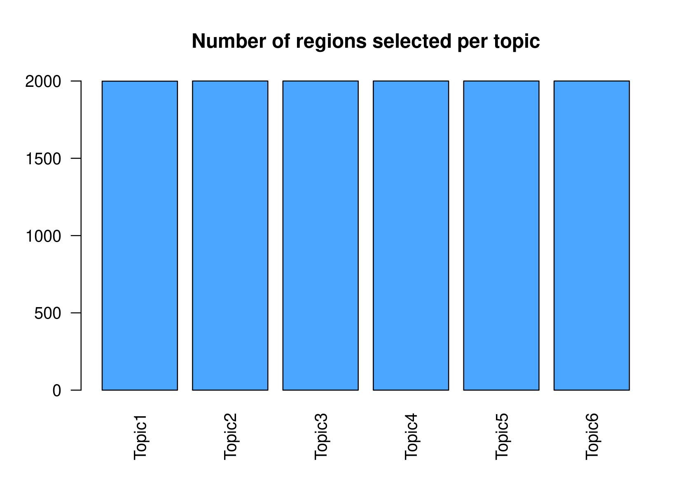

Last updated: 2020-11-27
Checks: 7 0
Knit directory: scATACseq-topics/
This reproducible R Markdown analysis was created with workflowr (version 1.6.2). The Checks tab describes the reproducibility checks that were applied when the results were created. The Past versions tab lists the development history.
Great! Since the R Markdown file has been committed to the Git repository, you know the exact version of the code that produced these results.
Great job! The global environment was empty. Objects defined in the global environment can affect the analysis in your R Markdown file in unknown ways. For reproduciblity it's best to always run the code in an empty environment.
The command set.seed(20200729) was run prior to running the code in the R Markdown file. Setting a seed ensures that any results that rely on randomness, e.g. subsampling or permutations, are reproducible.
Great job! Recording the operating system, R version, and package versions is critical for reproducibility.
Nice! There were no cached chunks for this analysis, so you can be confident that you successfully produced the results during this run.
Great job! Using relative paths to the files within your workflowr project makes it easier to run your code on other machines.
Great! You are using Git for version control. Tracking code development and connecting the code version to the results is critical for reproducibility.
The results in this page were generated with repository version 6acf4be. See the Past versions tab to see a history of the changes made to the R Markdown and HTML files.
Note that you need to be careful to ensure that all relevant files for the analysis have been committed to Git prior to generating the results (you can use wflow_publish or wflow_git_commit). workflowr only checks the R Markdown file, but you know if there are other scripts or data files that it depends on. Below is the status of the Git repository when the results were generated:
Ignored files:
Ignored: .Rhistory
Ignored: .Rproj.user/
Untracked files:
Untracked: analysis/clusters_pca_structure_Cusanovich2018.Rmd
Untracked: analysis/motif_analysis_Buenrostro2018_chomVAR_scPeaks.Rmd
Untracked: analysis/process_data_Buenrostro2018_Chen2019.Rmd
Untracked: buenrostro2018.RData
Untracked: scripts/fit_all_models_Buenrostro_2018_chromVar_scPeaks_filtered.sbatch
Unstaged changes:
Modified: analysis/plots_Lareau2019_bonemarrow.Rmd
Modified: analysis/process_data_Buenrostro2018.Rmd
Modified: code/motif_analysis.R
Modified: code/plots.R
Modified: scripts/fit_all_models_Buenrostro_2018.sbatch
Note that any generated files, e.g. HTML, png, CSS, etc., are not included in this status report because it is ok for generated content to have uncommitted changes.
These are the previous versions of the repository in which changes were made to the R Markdown (analysis/cisTopic_Buenrostro2018_chomVAR_scPeaks.Rmd) and HTML (docs/cisTopic_Buenrostro2018_chomVAR_scPeaks.html) files. If you've configured a remote Git repository (see ?wflow_git_remote), click on the hyperlinks in the table below to view the files as they were in that past version.
| File | Version | Author | Date | Message |
|---|---|---|---|---|
| Rmd | 6acf4be | kevinlkx | 2020-11-27 | run cisTopic analysis on Buenrostro2018_chomVAR_scPeaks dataset |
| html | 4e49f75 | kevinlkx | 2020-11-27 | Build site. |
| Rmd | 57e6ba9 | kevinlkx | 2020-11-27 | run cisTopic analysis on Buenrostro2018_chomVAR_scPeaks dataset |
Here we perform topic modeling analysis in the Buenrostro et al (2018) scATAC-seq data based on chromVAR processed counts with scPeaks (> 1 sample).
Load packages and functions
suppressWarnings(library(cisTopic))
source("code/motif_analysis.R")data.dir <- "/project2/mstephens/kevinluo/scATACseq-topics/data/Buenrostro_2018/processed_data_Chen2019pipeline/chromVAR/"
load(file.path(data.dir, "Buenrostro_2018_binarized_scPeaks.RData"))
cat(sprintf("%d x %d counts matrix.\n",nrow(counts),ncol(counts)))
counts <- t(counts)
range(counts)
rownames(counts) <- paste0(peaks$chr, ":", peaks$start, "-",peaks$end)
cisTopicObject <- createcisTopicObject(counts, project.name='Buenrostro_2018_chromVAR_scPeaks')
dim(cisTopicObject@count.matrix)cisTopicObject <- addCellMetadata(cisTopicObject, cell.data = samples)scripts/fit_cisTopic_topics.R, scripts/fit_cisTopic_topics.sbatch and scripts/fit_cisTopic_Buenrostro_2018_chromVAR_scPeaks.sh for details.cisTopicObject <- runWarpLDAModels(cisTopicObject, topic=c(2:15, 20, 25, 35, 40, 45, 50), seed=1, nCores=10, iterations = 1000, addModels=FALSE)dir.out <- "/project2/mstephens/kevinluo/scATACseq-topics/output/cisTopic_Buenrostro_2018_chromVAR_scPeaks/binarized/"
cisTopicObject <- readRDS(paste0(dir.out, "/cisTopic-Buenrostro2018-binarized.rds"))
cat(sprintf("%d x %d counts matrix.\n",nrow(cisTopicObject@count.matrix),ncol(cisTopicObject@count.matrix)))
# 228965 x 2034 counts matrix.cisTopic (WarpLDA version) incorporates three different approaches (from left to right columns in the figure below) to select the best topic: From cisTopic tutorial website: - The log likelihood can be used to estimate the plausibility of a model parameter value, given the observed data (i.e. the highest the likelihood, the better the model). This is not recommended when running WarpLDA, as the curves stabilize rather than reaching a maximum.
The second derivative in each point of the likelihood curve, as it measures the changed in the curvature from point to point (i.e. the highest the second derivative means that the next model is not improving much more the log-likelihood) . This is not recommended when running CGS, as the curves tend to be noisier or reach a maximum. This is the default in this version of cisTopic.
The perplexity of each model (only for WarpLDA models) measures how well the model predicts the sample. The lower the perplexity is, the better the model.
par(mfrow=c(3,3))
cisTopicObject <- selectModel(cisTopicObject, type='maximum')
cisTopicObject <- selectModel(cisTopicObject, type='perplexity')
cisTopicObject <- selectModel(cisTopicObject, type='derivative')
| Version | Author | Date |
|---|---|---|
| 4e49f75 | kevinlkx | 2020-11-27 |
# [1] "Are these CGS models? Please, use type=\"maximum\""Based on the second derivative (default in the WarpLDA version of cisTopic), we selected the cisTopic model with 6 topics. Alternatively, we can also manually select the number of topics with the parameter select.
The topic assignments to the cells (topic-cell matrix) are stored in cisTopicObject@selected.model$document_expects, with cells as columns, topics as rows. We can also retrieve the topic-cell and region-topic assignments using the function modelMatSelection.
fit.L <- t(cisTopicObject@selected.model$document_expects)
cellassign <- t(modelMatSelection(cisTopicObject, 'cell', 'Probability'))
all(cellassign == fit.L)
head(cellassign)
# [1] TRUE
# Topic1 Topic2 Topic3 Topic4
# BM1077-CLP-Frozen-160106-13 0.2452459 0.2616393 0.4275410 0.010491803
# BM1077-CLP-Frozen-160106-14 0.2354430 0.1932489 0.5181435 0.024472574
# BM1077-CLP-Frozen-160106-2 0.2482993 0.2100340 0.4957483 0.008503401
# BM1077-CLP-Frozen-160106-21 0.2216359 0.2357080 0.4028144 0.035180299
# BM1077-CLP-Frozen-160106-27 0.3217260 0.1294474 0.4224073 0.009084027
# BM1077-CLP-Frozen-160106-3 0.2869806 0.1351801 0.5252078 0.016066482
# Topic5 Topic6
# BM1077-CLP-Frozen-160106-13 0.006557377 0.04852459
# BM1077-CLP-Frozen-160106-14 0.012658228 0.01603376
# BM1077-CLP-Frozen-160106-2 0.008503401 0.02891156
# BM1077-CLP-Frozen-160106-21 0.027264732 0.07739666
# BM1077-CLP-Frozen-160106-27 0.006056018 0.11127933
# BM1077-CLP-Frozen-160106-3 0.016066482 0.02049861cisTopic includes wrapper functions to easily run Umap, tSNE, diffussion maps and PCA (the results are saved in the slot @dr$cell):
# run Umap of the cells
cisTopicObject <- runUmap(cisTopicObject, target='cell', seed=123, method='Probability')
# Loading required package: umap
# run tSNE of the cells
cisTopicObject <- runtSNE(cisTopicObject, target='cell', seed=123, pca=FALSE, method='Probability')
# Loading required package: Rtsne
summary(cisTopicObject@dr$cell)
# Length Class Mode
# Umap 4068 -none- numeric
# tSNE 4068 -none- numericcisTopic offers a unified visualization function (plotFeatures), which allows to visualize tSNE, diffussion maps, principal components and biplots (in 2/3D), colored by metadata and/or topic enrichment.
par(mfrow=c(1,1))
plotFeatures(cisTopicObject, method='Umap', target='cell', topic_contr=NULL, colorBy='label',
cex.legend = 0.8, factor.max=.75, dim=2, legend=TRUE,
col.low='darkgreen', col.mid='yellow', col.high='brown1', intervals=10)
| Version | Author | Date |
|---|---|---|
| 4e49f75 | kevinlkx | 2020-11-27 |
Color the Umap by topic score (probability)
par(mfrow=c(2,3))
plotFeatures(cisTopicObject, method='Umap', target='cell', topic_contr='Probability',
colorBy=NULL, cex.legend = 0.8, factor.max=.75, dim=2, legend=TRUE)
| Version | Author | Date |
|---|---|---|
| 4e49f75 | kevinlkx | 2020-11-27 |
par(mfrow=c(1,1))
plotFeatures(cisTopicObject, method='tSNE', target='cell', topic_contr=NULL, colorBy='label',
cex.legend = 0.8, factor.max=.75, dim=2, legend=TRUE,
col.low='darkgreen', col.mid='yellow', col.high='brown1', intervals=10)
| Version | Author | Date |
|---|---|---|
| 4e49f75 | kevinlkx | 2020-11-27 |
Color the tSNE by topic score (probability)
par(mfrow=c(2,3))
plotFeatures(cisTopicObject, method='tSNE', target='cell', topic_contr='Probability',
colorBy=NULL, cex.legend = 0.8, factor.max=.75, dim=2, legend=TRUE)
| Version | Author | Date |
|---|---|---|
| 4e49f75 | kevinlkx | 2020-11-27 |
cellTopicHeatmap(cisTopicObject, method='Probability', colorBy=c('label'))
| Version | Author | Date |
|---|---|---|
| 4e49f75 | kevinlkx | 2020-11-27 |
cellTopicHeatmap(cisTopicObject, method='Z-score', colorBy=c('label'), col.low = "dodgerblue", col.mid = "floralwhite", col.high = "brown1")
| Version | Author | Date |
|---|---|---|
| 4e49f75 | kevinlkx | 2020-11-27 |
Additionally, we can define clusters using the cell-topic matrix... [TO DO: add PCA plots and structure plots]
To analyze the regions included in the cisTopics, the first step is always to derive a score that evaluates how likely is for a region to belong to a topic. getRegionsScores() calculates these scores based on the proportion of region specific assignments to a topic. These scores can be rescaled into the range [0,1], which will be useful for the binarization step (as it will force data to follow a gamma distribution shape). This information is stored in the region.data slot.
getRegionsScores gets region scores per topic using three different methods: Z-score, Probability, and NormTop. - 'Z-score' computes the Z-score for each topic assingment per cell/region. - 'Probability' divides the topic assignments by the total number of assignments in the cell/region in the last iteration plus alpha. - If using 'NormTop', regions are given an score defined by: \(β_{w, k} (\log β_{w,k} - 1 / K ∑_{k'} \log β_{w,k'})\).
cisTopicObject <- getRegionsScores(cisTopicObject, method='Z-score', scale=FALSE)
region.zscore <- cisTopicObject@region.data
print(head(region.zscore))
# seqnames start end width nCounts nCells Scores_Topic1
# chr1:10270-10769 chr1 10270 10769 499 230 230 0.7802464
# chr1:13253-13752 chr1 13253 13752 499 55 55 -0.5422576
# chr1:16000-16499 chr1 16000 16499 499 60 60 1.8549556
# chr1:96351-96850 chr1 96351 96850 499 107 107 -0.4175421
# chr1:115482-115981 chr1 115482 115981 499 32 32 -0.3118308
# chr1:237507-238006 chr1 237507 238006 499 111 111 1.8454276
# Scores_Topic2 Scores_Topic3 Scores_Topic4 Scores_Topic5
# chr1:10270-10769 -0.3356874 -1.0161348 0.1542347 1.46069380
# chr1:13253-13752 -0.5422576 -0.5422576 -0.5422576 0.22676227
# chr1:16000-16499 -0.5796736 -0.5796736 0.4637389 -0.57967362
# chr1:96351-96850 -0.4175421 -0.4175421 -0.4175421 2.04088334
# chr1:115482-115981 -0.4989292 -0.2182815 2.0269000 -0.49892923
# chr1:237507-238006 -0.7039260 -0.7039260 0.3234255 -0.05707508
# Scores_Topic6
# chr1:10270-10769 -1.0433527
# chr1:13253-13752 1.9422682
# chr1:16000-16499 -0.5796736
# chr1:96351-96850 -0.3707149
# chr1:115482-115981 -0.4989292
# chr1:237507-238006 -0.7039260cisTopicObject <- getRegionsScores(cisTopicObject, method='Z-score', scale=TRUE)
region.zscore <- cisTopicObject@region.data
print(head(region.zscore))
# seqnames start end width nCounts nCells Scores_Topic1
# chr1:10270-10769 chr1 10270 10769 499 230 230 0.6811759
# chr1:13253-13752 chr1 13253 13752 499 55 55 0.3468002
# chr1:16000-16499 chr1 16000 16499 499 60 60 0.9529004
# chr1:96351-96850 chr1 96351 96850 499 107 107 0.3783326
# chr1:115482-115981 chr1 115482 115981 499 32 32 0.4050602
# chr1:237507-238006 chr1 237507 238006 499 111 111 0.9504913
# Scores_Topic2 Scores_Topic3 Scores_Topic4 Scores_Topic5
# chr1:10270-10769 0.3932414 0.2216613 0.5198107 0.8488098
# chr1:13253-13752 0.3405103 0.3422997 0.3425733 0.5274608
# chr1:16000-16499 0.3309591 0.3327744 0.5985707 0.3174432
# chr1:96351-96850 0.3723464 0.3740494 0.3743099 0.9999067
# chr1:115482-115981 0.3515707 0.4247767 0.9963505 0.3384712
# chr1:237507-238006 0.2992412 0.3011426 0.5628649 0.4535419
# Scores_Topic6
# chr1:10270-10769 0.2197116
# chr1:13253-13752 0.9749634
# chr1:16000-16499 0.3370053
# chr1:96351-96850 0.3898641
# chr1:115482-115981 0.3574306
# chr1:237507-238006 0.3055740cisTopicObject <- getRegionsScores(cisTopicObject, method='Probability', scale=FALSE)
region.probability <- cisTopicObject@region.data
print(head(region.probability))
# seqnames start end width nCounts nCells Scores_Topic1
# chr1:10270-10769 chr1 10270 10769 499 230 230 2.818780e-05
# chr1:13253-13752 chr1 13253 13752 499 55 55 4.200864e-08
# chr1:16000-16499 chr1 16000 16499 499 60 60 1.768564e-05
# chr1:96351-96850 chr1 96351 96850 499 107 107 4.200864e-08
# chr1:115482-115981 chr1 115482 115981 499 32 32 8.821815e-07
# chr1:237507-238006 chr1 237507 238006 499 111 111 2.818780e-05
# Scores_Topic2 Scores_Topic3 Scores_Topic4 Scores_Topic5
# chr1:10270-10769 2.324895e-05 2.563283e-07 3.995551e-05 6.214904e-05
# chr1:13253-13752 8.907642e-08 2.330257e-08 9.060207e-08 8.839874e-06
# chr1:16000-16499 8.907642e-08 2.330257e-08 1.639898e-05 6.747996e-08
# chr1:96351-96850 8.907642e-08 2.330257e-08 9.060207e-08 7.092144e-05
# chr1:115482-115981 8.907642e-08 7.223798e-07 2.455316e-05 6.747996e-08
# chr1:237507-238006 8.907642e-08 2.330257e-08 2.455316e-05 1.153907e-05
# Scores_Topic6
# chr1:10270-10769 5.073988e-08
# chr1:13253-13752 2.136149e-05
# chr1:16000-16499 5.073988e-08
# chr1:96351-96850 1.065537e-06
# chr1:115482-115981 5.073988e-08
# chr1:237507-238006 5.073988e-08cisTopicObject <- getRegionsScores(cisTopicObject, method='Probability', scale=TRUE)
region.probability <- cisTopicObject@region.data
print(head(region.probability))
# seqnames start end width nCounts nCells Scores_Topic1
# chr1:10270-10769 chr1 10270 10769 499 230 230 0.119642857
# chr1:13253-13752 chr1 13253 13752 499 55 55 0.000000000
# chr1:16000-16499 chr1 16000 16499 499 60 60 0.075000000
# chr1:96351-96850 chr1 96351 96850 499 107 107 0.000000000
# chr1:115482-115981 chr1 115482 115981 499 32 32 0.003571429
# chr1:237507-238006 chr1 237507 238006 499 111 111 0.119642857
# Scores_Topic2 Scores_Topic3 Scores_Topic4 Scores_Topic5
# chr1:10270-10769 0.1027668 0.000729927 0.19383260 0.28571429
# chr1:13253-13752 0.0000000 0.000000000 0.00000000 0.04037267
# chr1:16000-16499 0.0000000 0.000000000 0.07929515 0.00000000
# chr1:96351-96850 0.0000000 0.000000000 0.00000000 0.32608696
# chr1:115482-115981 0.0000000 0.002189781 0.11894273 0.00000000
# chr1:237507-238006 0.0000000 0.000000000 0.11894273 0.05279503
# Scores_Topic6
# chr1:10270-10769 0.000000000
# chr1:13253-13752 0.086419753
# chr1:16000-16499 0.000000000
# chr1:96351-96850 0.004115226
# chr1:115482-115981 0.000000000
# chr1:237507-238006 0.000000000cisTopicObject <- getRegionsScores(cisTopicObject, method='NormTop', scale=FALSE)
region.NormTop <- cisTopicObject@region.data
print(head(region.NormTop))
# seqnames start end width nCounts nCells Scores_Topic1
# chr1:10270-10769 chr1 10270 10769 499 230 230 8.911007e-06
# chr1:13253-13752 chr1 13253 13752 499 55 55 0.000000e+00
# chr1:16000-16499 chr1 16000 16499 499 60 60 1.227631e-05
# chr1:96351-96850 chr1 96351 96850 499 107 107 0.000000e+00
# chr1:115482-115981 chr1 115482 115981 499 32 32 -1.290886e-07
# chr1:237507-238006 chr1 237507 238006 499 111 111 2.228603e-05
# Scores_Topic2 Scores_Topic3 Scores_Topic4 Scores_Topic5
# chr1:10270-10769 4.273959e-06 -2.364444e-07 2.406384e-05 6.029550e-05
# chr1:13253-13752 0.000000e+00 0.000000e+00 0.000000e+00 3.023777e-06
# chr1:16000-16499 0.000000e+00 0.000000e+00 1.076603e-05 0.000000e+00
# chr1:96351-96850 0.000000e+00 0.000000e+00 0.000000e+00 1.249909e-04
# chr1:115482-115981 0.000000e+00 -1.164380e-07 2.544592e-05 0.000000e+00
# chr1:237507-238006 0.000000e+00 0.000000e+00 1.724757e-05 2.455172e-06
# Scores_Topic6
# chr1:10270-10769 0.000000e+00
# chr1:13253-13752 1.836160e-05
# chr1:16000-16499 0.000000e+00
# chr1:96351-96850 -2.763661e-07
# chr1:115482-115981 0.000000e+00
# chr1:237507-238006 0.000000e+00cisTopicObject <- getRegionsScores(cisTopicObject, method='NormTop', scale=TRUE)
region.NormTop <- cisTopicObject@region.data
print(head(region.NormTop))
# seqnames start end width nCounts nCells Scores_Topic1
# chr1:10270-10769 chr1 10270 10769 499 230 230 0.04012664
# chr1:13253-13752 chr1 13253 13752 499 55 55 0.02409664
# chr1:16000-16499 chr1 16000 16499 499 60 60 0.04618047
# chr1:96351-96850 chr1 96351 96850 499 107 107 0.02409664
# chr1:115482-115981 chr1 115482 115981 499 32 32 0.02386442
# chr1:237507-238006 chr1 237507 238006 499 111 111 0.06418694
# Scores_Topic2 Scores_Topic3 Scores_Topic4 Scores_Topic5
# chr1:10270-10769 0.03249664 0.01740609 0.07905513 0.13121317
# chr1:13253-13752 0.02494510 0.01769429 0.02483142 0.03132216
# chr1:16000-16499 0.02494510 0.01769429 0.04909081 0.02604821
# chr1:96351-96850 0.02494510 0.01769429 0.02483142 0.24405234
# chr1:115482-115981 0.02494510 0.01755237 0.08216941 0.02604821
# chr1:237507-238006 0.02494510 0.01769429 0.06369585 0.03033042
# Scores_Topic6
# chr1:10270-10769 0.03183595
# chr1:13253-13752 0.06227577
# chr1:16000-16499 0.03183595
# chr1:96351-96850 0.03137779
# chr1:115482-115981 0.03183595
# chr1:237507-238006 0.03183595BigWig files for observing the scored regions in the genome can be generated. Note that information on the length of the chromosomes has to be provided. These files can be uploaded in IGV or UCSC for visualisation. This information can be easily found in the TxDb objects of the corresponding genomes, for example.
## human hg19 gene annotation
suppressMessages(library(TxDb.Hsapiens.UCSC.hg19.knownGene))
txdb <- TxDb.Hsapiens.UCSC.hg19.knownGene
getBigwigFiles(cisTopicObject, path=paste0(dir.out, '/cisTopics_regionscores_normTop_asBW'), seqlengths=seqlengths(txdb))However, many tools are limited to work with sets of regions rather than rankings of regions. Keywords, or the most contributing regions in a topic, can be used as a representative set of regions of the topic. binarizecisTopics() allows to select the top regions based on two methods:
method = "Predefined": to select a predefined number of regions (determined by the cutoffs argument)
method = "GammaFit" (default): to automatically select a threshold based on a fit of the scores to a gamma distribution. This is recommended when using method="NormTop" and scale=TRUE in getRegionScores(). Note that the probability threshold must be provided by the user and it must be taken after the density (based on the fitted gamma distribution) is stabilised (i.e. in the tail of the distribution). Selected regions per topic will be stored as a list in object@binarized.cisTopics.
Select the top 2000 regions per topic.
par(mfrow=c(2,3))
cisTopicObject <- binarizecisTopics(cisTopicObject, method="Predefined", cutoffs=2000, plot=FALSE)
| Version | Author | Date |
|---|---|---|
| 4e49f75 | kevinlkx | 2020-11-27 |
summary(cisTopicObject@binarized.cisTopics)
# Length Class Mode
# Topic1 1 data.frame list
# Topic2 1 data.frame list
# Topic3 1 data.frame list
# Topic4 1 data.frame list
# Topic5 1 data.frame list
# Topic6 1 data.frame listpar(mfrow=c(2,3))
cisTopicObject <- binarizecisTopics(cisTopicObject, method="GammaFit", thrP=0.99, plot=TRUE)
# Loading required package: fitdistrplus
# Loading required package: MASS
#
# Attaching package: 'MASS'
# The following object is masked from 'package:plotly':
#
# select
# Loading required package: survival
# Loading required package: npsurv
# Loading required package: lsei
| Version | Author | Date |
|---|---|---|
| 4e49f75 | kevinlkx | 2020-11-27 |
| Version | Author | Date |
|---|---|---|
| 4e49f75 | kevinlkx | 2020-11-27 |
summary(cisTopicObject@binarized.cisTopics)
# Length Class Mode
# Topic1 1 data.frame list
# Topic2 1 data.frame list
# Topic3 1 data.frame list
# Topic4 1 data.frame list
# Topic5 1 data.frame list
# Topic6 1 data.frame listThe regions sets selected and distributions for each cisTopic can then be analized in different ways. They can also be exported to bed files to analyze with external tools:
getBedFiles(cisTopicObject, path=paste0(dir.out, '/cisTopics_selected_regions_asBED'))Based on the topic scores for each region, different methods can be used for clustering and/or visualization.
cisTopic includes wrapper functions to easily run Umap, tSNE, diffussion maps and PCA (the results are saved in the slot @dr$region). In the case of regions, only high confidence regions (i.e. that pass the binarization threshold at least in 1 topic) are used:
cisTopicObject <- runtSNE(cisTopicObject, target='region', perplexity=200, check_duplicates=FALSE)
summary(cisTopicObject@dr$region)
# Length Class Mode
# tSNE 37378 -none- numericThe function plotFeatures can also be used to visualize region-based tSNEs, diffussion maps, principal components and biplots (in 2/3D), colored by metadata and/or topic enrichment.
par(mfrow=c(1,1))
plotFeatures(cisTopicObject, method='tSNE', target='region', topic_contr=NULL, colorBy=c('nCells'), cex.legend = 0.8, factor.max=.75, dim=2, legend=TRUE, col.low='darkgreen', col.mid='yellow', col.high='brown1', intervals=10)
| Version | Author | Date |
|---|---|---|
| 4e49f75 | kevinlkx | 2020-11-27 |
Color the tSNE plot of the regions by topic scores (Z-score or probability)
# topic_contr: Color by topic distribution ('Z-score' or 'Probability').
par(mfrow=c(2,3))
plotFeatures(cisTopicObject, method='tSNE', target='region', topic_contr='Z-score', colorBy=NULL, cex.legend = 0.8, factor.max=.75, dim=2, legend=TRUE, col.low='darkgreen', col.mid='yellow', col.high='brown1')
| Version | Author | Date |
|---|---|---|
| 4e49f75 | kevinlkx | 2020-11-27 |
plotFeatures(cisTopicObject, method='tSNE', target='region', topic_contr='Probability', colorBy=NULL, cex.legend = 0.8, factor.max=.75, dim=2, legend=TRUE)
| Version | Author | Date |
|---|---|---|
| 4e49f75 | kevinlkx | 2020-11-27 |
Another way of gaining insight on the topics is to link the regions to genes, and to determine GO terms (or pathways or any other type of gene-set) that are enriched within them.
cisTopic provides the function annotateRegions() to annotate regions to GO terms using the “TxDb” Bioconductor packages (replace ‘TxDb.Hsapiens.UCSC.hg19.knownGene’ by the appropiate organism package), and annotation databases (“OrgDb” packages).
suppressMessages(library(TxDb.Hsapiens.UCSC.hg19.knownGene))
suppressMessages(library(org.Hs.eg.db))
cisTopicObject <- annotateRegions(cisTopicObject, txdb=TxDb.Hsapiens.UCSC.hg19.knownGene, annoDb='org.Hs.eg.db')
# Loading required package: ChIPseeker
#
# Registered S3 method overwritten by 'enrichplot':
# method from
# fortify.enrichResult DOSE
# ChIPseeker v1.20.0 For help: https://guangchuangyu.github.io/ChIPseeker
#
# If you use ChIPseeker in published research, please cite:
# Guangchuang Yu, Li-Gen Wang, Qing-Yu He. ChIPseeker: an R/Bioconductor package for ChIP peak annotation, comparison and visualization. Bioinformatics 2015, 31(14):2382-2383
# 'select()' returned 1:many mapping between keys and columns
# >> preparing features information... 2020-11-27 10:02:41 PM
# >> identifying nearest features... 2020-11-27 10:02:42 PM
# >> calculating distance from peak to TSS... 2020-11-27 10:02:47 PM
# >> assigning genomic annotation... 2020-11-27 10:02:47 PM
# >> adding gene annotation... 2020-11-27 10:03:03 PM
# >> assigning chromosome lengths 2020-11-27 10:03:03 PM
# >> done... 2020-11-27 10:03:03 PMWe can use the region type annotations as region sets/signatures to check whether a topic is more enriched in a certain type of region.
par(mfrow=c(1,1))
signaturesHeatmap(cisTopicObject, selected.signatures = 'annotation')
| Version | Author | Date |
|---|---|---|
| 4e49f75 | kevinlkx | 2020-11-27 |
plotFeatures(cisTopicObject, method='tSNE', target='region', topic_contr=NULL, colorBy=c('annotation'), cex.legend = 0.8, factor.max=.75, dim=2, legend=TRUE, intervals=20)
| Version | Author | Date |
|---|---|---|
| 4e49f75 | kevinlkx | 2020-11-27 |
Save cisTopicObject for further downstream analysis.
saveRDS(cisTopicObject, paste0(dir.out, "/cisTopic-Buenrostro2018-binarized-processed-1.rds"))For identifying enriched GO terms per topic, cisTopic provides a wrapper over rGREAT (Gu Z, 2017)[This analysis takes longer time]. The binarized topics (i.e. sets of top regions per topic) are used in this step. Results are stored in object@binarized.rGREAT.
cisTopicObject <- GREAT(cisTopicObject, genome='hg19', fold_enrichment=2, geneHits=1, sign=0.05, request_interval=10)We can visualize the enrichment results:
ontologyDotPlot(cisTopicObject, top=5, topics=c(6,10), var.y='name', order.by='Binom_Adjp_BH')It is also possible to identify enriched motifs within the topics and form cistromes (i.e. sets of sequences enriched for a given motif). To do this, we use RcisTarget (Aibar et al., 2017). RcisTarget tutorial
You can find the region-based database at: https://resources.aertslab.org/cistarget/ The list of all available databases is at https://resources.aertslab.org/cistarget/. Each database is stored in a .feather file.
Download the database (region based) to /project2/mstephens/kevinluo/cisTarget
dir.out <- "/project2/mstephens/kevinluo/scATACseq-topics/output/cisTopic_Buenrostro_2018_chromVAR_scPeaks/binarized/"
cisTopicObject <- readRDS(paste0(dir.out, "/cisTopic-Buenrostro2018-binarized-processed-1.rds"))For this analysis, we first need to convert the cisTopic regions to the regions in the cisTarget databases (“ctx regions”).
We can do this in two ways:
cisTopicObject <- binarizedcisTopicsToCtx(cisTopicObject, genome='hg19')
# Number of regions selected: 3181
# Number of regions selected: 3484
# Number of regions selected: 2607
# Number of regions selected: 3039
# Number of regions selected: 3894
# Number of regions selected: 3703
summary(cisTopicObject@binarized.regions.to.Rct)
head(cisTopicObject@binarized.regions.to.Rct[[1]])
# Length Class Mode
# Topic1 3181 -none- character
# Topic2 3484 -none- character
# Topic3 2607 -none- character
# Topic4 3039 -none- character
# Topic5 3894 -none- character
# Topic6 3703 -none- character
# [1] "chr1-reg212" "chr1-reg413" "chr1-reg422" "chr1-reg519" "chr1-reg534"
# [6] "chr1-reg607"cisTopicObject <- scoredRegionsToCtx(cisTopicObject, genome='hg19')
# Number of regions selected: 163147
dim(cisTopicObject@region.data)
print(cisTopicObject@region.data[1:3,])
# [1] 228965 25
# seqnames start end width nCounts nCells Scores_Topic1
# chr1:10270-10769 chr1 10270 10769 500 230 230 0.04012664
# chr1:13253-13752 chr1 13253 13752 500 55 55 0.02409664
# chr1:16000-16499 chr1 16000 16499 500 60 60 0.04618047
# Scores_Topic2 Scores_Topic3 Scores_Topic4 Scores_Topic5
# chr1:10270-10769 0.03249664 0.01740609 0.07905513 0.13121317
# chr1:13253-13752 0.02494510 0.01769429 0.02483142 0.03132216
# chr1:16000-16499 0.02494510 0.01769429 0.04909081 0.02604821
# Scores_Topic6 annotation geneChr geneStart geneEnd
# chr1:10270-10769 0.03183595 Promoter (1-2kb) 1 11874 14409
# chr1:13253-13752 0.06227577 Promoter (1-2kb) 1 11874 14409
# chr1:16000-16499 0.03183595 Promoter (<=1kb) 1 14362 16765
# geneLength geneStrand geneId transcriptId distanceToTSS
# chr1:10270-10769 2536 1 100287102 uc001aaa.3 -1105
# chr1:13253-13752 2536 1 100287102 uc010nxr.1 1379
# chr1:16000-16499 2404 2 653635 uc009vis.3 266
# ENSEMBL SYMBOL
# chr1:10270-10769 ENSG00000223972 DDX11L1
# chr1:13253-13752 ENSG00000223972 DDX11L1
# chr1:16000-16499 ENSG00000227232 WASH7P
# GENENAME CtxLabels
# chr1:10270-10769 DEAD/H-box helicase 11 like 1 chr1-reg3
# chr1:13253-13752 DEAD/H-box helicase 11 like 1 <NA>
# chr1:16000-16499 WAS protein family homolog 7, pseudogene chr1-reg5We can run RcisTarget in each topic using the wrapper function topicsRcisTarget(). This function uses the binarized topic regions converted to ctx regions.
pathToFeather <- "/project2/mstephens/kevinluo/cisTarget/hg19-regions-9species.all_regions.mc9nr.feather"
cisTopicObject <- topicsRcisTarget(cisTopicObject, genome='hg19', pathToFeather, reduced_database=FALSE, nesThreshold=3, rocthr=0.005, maxRank=20000, nCores=5)We can use HOMER to do TF motif enrichment for target regions (peaks)
homer.result <- vector("list", length(cisTopicObject@binarized.cisTopics))
for(i in 1:length(cisTopicObject@binarized.cisTopics)){
target_regions <- read.table(sprintf('%s/cisTopics_selected_regions_asBED/Topic_%s.bed', dir.out, i), sep = "\t", header = FALSE, stringsAsFactors = FALSE)
target_regions[,4] <- paste0(target_regions[,1], ":",target_regions[,2], "-",target_regions[,3])
file.regions <- sprintf('%s/cisTopics_selected_regions_asBED/Topic_%s_regions.bed', dir.out, i)
write.table(target_regions, file.regions, col.names = FALSE, row.names = FALSE, quote = FALSE, sep = "\t")
homer.result[[i]] <- homer_motif_enrichment('/project2/xinhe/software/homer/bin/findMotifsGenome.pl',
file.regions,
genome = 'hg19',
result.dir = sprintf('%s/motif_enrichment_homer/Topic_%s/', dir.out, i),
region.size = 200,
n.cores = 5,
run = FALSE)
}
#
# HOMER command:
# /project2/xinhe/software/homer/bin/findMotifsGenome.pl /project2/mstephens/kevinluo/scATACseq-topics/output/cisTopic_Buenrostro_2018_chromVAR_scPeaks/binarized//cisTopics_selected_regions_asBED/Topic_1_regions.bed hg19 /project2/mstephens/kevinluo/scATACseq-topics/output/cisTopic_Buenrostro_2018_chromVAR_scPeaks/binarized//motif_enrichment_homer/Topic_1/ -len 8,10,12 -size 200 -mis 2 -S 25 -p 5
#
# HOMER command:
# /project2/xinhe/software/homer/bin/findMotifsGenome.pl /project2/mstephens/kevinluo/scATACseq-topics/output/cisTopic_Buenrostro_2018_chromVAR_scPeaks/binarized//cisTopics_selected_regions_asBED/Topic_2_regions.bed hg19 /project2/mstephens/kevinluo/scATACseq-topics/output/cisTopic_Buenrostro_2018_chromVAR_scPeaks/binarized//motif_enrichment_homer/Topic_2/ -len 8,10,12 -size 200 -mis 2 -S 25 -p 5
#
# HOMER command:
# /project2/xinhe/software/homer/bin/findMotifsGenome.pl /project2/mstephens/kevinluo/scATACseq-topics/output/cisTopic_Buenrostro_2018_chromVAR_scPeaks/binarized//cisTopics_selected_regions_asBED/Topic_3_regions.bed hg19 /project2/mstephens/kevinluo/scATACseq-topics/output/cisTopic_Buenrostro_2018_chromVAR_scPeaks/binarized//motif_enrichment_homer/Topic_3/ -len 8,10,12 -size 200 -mis 2 -S 25 -p 5
#
# HOMER command:
# /project2/xinhe/software/homer/bin/findMotifsGenome.pl /project2/mstephens/kevinluo/scATACseq-topics/output/cisTopic_Buenrostro_2018_chromVAR_scPeaks/binarized//cisTopics_selected_regions_asBED/Topic_4_regions.bed hg19 /project2/mstephens/kevinluo/scATACseq-topics/output/cisTopic_Buenrostro_2018_chromVAR_scPeaks/binarized//motif_enrichment_homer/Topic_4/ -len 8,10,12 -size 200 -mis 2 -S 25 -p 5
#
# HOMER command:
# /project2/xinhe/software/homer/bin/findMotifsGenome.pl /project2/mstephens/kevinluo/scATACseq-topics/output/cisTopic_Buenrostro_2018_chromVAR_scPeaks/binarized//cisTopics_selected_regions_asBED/Topic_5_regions.bed hg19 /project2/mstephens/kevinluo/scATACseq-topics/output/cisTopic_Buenrostro_2018_chromVAR_scPeaks/binarized//motif_enrichment_homer/Topic_5/ -len 8,10,12 -size 200 -mis 2 -S 25 -p 5
#
# HOMER command:
# /project2/xinhe/software/homer/bin/findMotifsGenome.pl /project2/mstephens/kevinluo/scATACseq-topics/output/cisTopic_Buenrostro_2018_chromVAR_scPeaks/binarized//cisTopics_selected_regions_asBED/Topic_6_regions.bed hg19 /project2/mstephens/kevinluo/scATACseq-topics/output/cisTopic_Buenrostro_2018_chromVAR_scPeaks/binarized//motif_enrichment_homer/Topic_6/ -len 8,10,12 -size 200 -mis 2 -S 25 -p 5
sessionInfo()
# R version 3.6.1 (2019-07-05)
# Platform: x86_64-pc-linux-gnu (64-bit)
# Running under: Scientific Linux 7.4 (Nitrogen)
#
# Matrix products: default
# BLAS/LAPACK: /software/openblas-0.2.19-el7-x86_64/lib/libopenblas_haswellp-r0.2.19.so
#
# locale:
# [1] LC_CTYPE=en_US.UTF-8 LC_NUMERIC=C
# [3] LC_TIME=en_US.UTF-8 LC_COLLATE=en_US.UTF-8
# [5] LC_MONETARY=en_US.UTF-8 LC_MESSAGES=en_US.UTF-8
# [7] LC_PAPER=en_US.UTF-8 LC_NAME=C
# [9] LC_ADDRESS=C LC_TELEPHONE=C
# [11] LC_MEASUREMENT=en_US.UTF-8 LC_IDENTIFICATION=C
#
# attached base packages:
# [1] stats4 parallel grid stats graphics grDevices utils
# [8] datasets methods base
#
# other attached packages:
# [1] doRNG_1.8.2
# [2] rngtools_1.5
# [3] foreach_1.5.1
# [4] ChIPseeker_1.20.0
# [5] org.Hs.eg.db_3.7.0
# [6] TxDb.Hsapiens.UCSC.hg19.knownGene_3.2.2
# [7] GenomicFeatures_1.36.3
# [8] AnnotationDbi_1.46.0
# [9] Biobase_2.42.0
# [10] GenomicRanges_1.36.0
# [11] GenomeInfoDb_1.20.0
# [12] IRanges_2.18.1
# [13] S4Vectors_0.22.1
# [14] BiocGenerics_0.30.0
# [15] fitdistrplus_1.0-14
# [16] npsurv_0.4-0
# [17] lsei_1.2-0
# [18] survival_2.44-1.1
# [19] MASS_7.3-53
# [20] ComplexHeatmap_1.20.0
# [21] fastcluster_1.1.25
# [22] scatterplot3d_0.3-41
# [23] plotly_4.9.0
# [24] ggplot2_3.3.2
# [25] Rtsne_0.15
# [26] umap_0.2.7.0
# [27] cisTopic_0.3.0
# [28] workflowr_1.6.2
#
# loaded via a namespace (and not attached):
# [1] reticulate_1.16 R.utils_2.10.1
# [3] tidyselect_1.1.0 RSQLite_2.1.1
# [5] htmlwidgets_1.5.2 BiocParallel_1.18.0
# [7] munsell_0.5.0 codetools_0.2-16
# [9] withr_2.3.0 RcisTarget_1.9.2
# [11] colorspace_2.0-0 GOSemSim_2.10.0
# [13] knitr_1.30 DOSE_3.10.2
# [15] git2r_0.27.1 urltools_1.7.3
# [17] GenomeInfoDbData_1.2.1 polyclip_1.10-0
# [19] bit64_0.9-7 farver_2.0.3
# [21] rprojroot_1.3-2 vctrs_0.3.5
# [23] generics_0.0.2 lambda.r_1.2.3
# [25] xfun_0.19 doParallel_1.0.14
# [27] R6_2.5.0 bitops_1.0-6
# [29] fgsea_1.15.1 gridGraphics_0.4-1
# [31] DelayedArray_0.10.0 promises_1.1.1
# [33] scales_1.1.1 ggraph_1.0.2
# [35] enrichplot_1.4.0 gtable_0.3.0
# [37] rlang_0.4.8 GlobalOptions_0.1.2
# [39] text2vec_0.5.1 splines_3.6.1
# [41] rtracklayer_1.44.0 lazyeval_0.2.2
# [43] europepmc_0.3 yaml_2.2.0
# [45] reshape2_1.4.3 backports_1.2.0
# [47] httpuv_1.5.4 qvalue_2.16.0
# [49] tools_3.6.1 feather_0.3.3
# [51] gridBase_0.4-7 ggplotify_0.0.3
# [53] ellipsis_0.3.1 gplots_3.0.1.1
# [55] RColorBrewer_1.1-2 ggridges_0.5.1
# [57] Rcpp_1.0.5 plyr_1.8.6
# [59] doMC_1.3.7 progress_1.2.2
# [61] zlibbioc_1.30.0 purrr_0.3.4
# [63] RCurl_1.98-1.1 prettyunits_1.1.1
# [65] openssl_1.4.3 GetoptLong_1.0.4
# [67] viridis_0.5.1 cowplot_1.1.0
# [69] SummarizedExperiment_1.14.1 ggrepel_0.8.2
# [71] fs_1.3.1 magrittr_1.5
# [73] data.table_1.13.2 RSpectra_0.15-0
# [75] futile.options_1.0.1 DO.db_2.9
# [77] circlize_0.4.11 triebeard_0.3.0
# [79] mlapi_0.1.0 whisker_0.4
# [81] matrixStats_0.57.0 hms_0.5.3
# [83] mime_0.9 evaluate_0.14
# [85] xtable_1.8-4 XML_3.98-1.20
# [87] AUCell_1.13.0 gridExtra_2.3
# [89] shape_1.4.5 compiler_3.6.1
# [91] biomaRt_2.40.1 tibble_3.0.4
# [93] KernSmooth_2.23-15 crayon_1.3.4
# [95] R.oo_1.24.0 htmltools_0.5.0
# [97] later_1.1.0.1 snow_0.4-3
# [99] tidyr_1.1.2 RcppParallel_5.0.2
# [101] DBI_1.1.0 tweenr_1.0.1
# [103] formatR_1.7 boot_1.3-23
# [105] Matrix_1.2-18 gdata_2.18.0
# [107] R.methodsS3_1.8.1 igraph_1.2.4.1
# [109] pkgconfig_2.0.3 rvcheck_0.1.3
# [111] GenomicAlignments_1.20.1 xml2_1.3.2
# [113] annotate_1.62.0 lda_1.4.2
# [115] XVector_0.24.0 stringr_1.4.0
# [117] digest_0.6.27 graph_1.60.0
# [119] Biostrings_2.52.0 rmarkdown_2.5
# [121] fastmatch_1.1-0 GSEABase_1.44.0
# [123] shiny_1.5.0 Rsamtools_2.0.0
# [125] gtools_3.8.1 rjson_0.2.20
# [127] lifecycle_0.2.0 jsonlite_1.6
# [129] futile.logger_1.4.3 viridisLite_0.3.0
# [131] askpass_1.1 pillar_1.4.7
# [133] lattice_0.20-41 plotrix_3.7-6
# [135] fastmap_1.0.1 httr_1.4.2
# [137] GO.db_3.8.2 glue_1.4.2
# [139] UpSetR_1.4.0 iterators_1.0.13
# [141] bit_1.1-14 ggforce_0.2.2
# [143] stringi_1.5.3 blob_1.2.0
# [145] caTools_1.17.1.2 doSNOW_1.0.18
# [147] memoise_1.1.0 dplyr_1.0.2